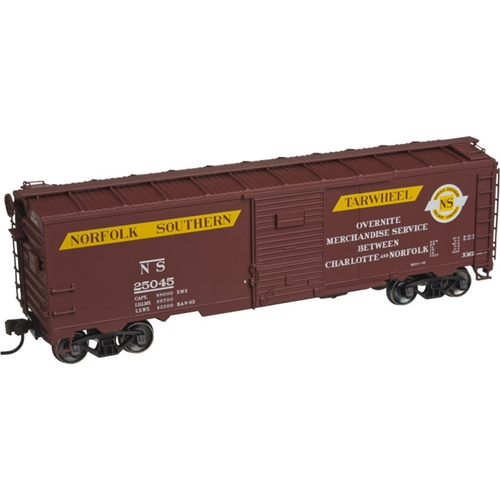
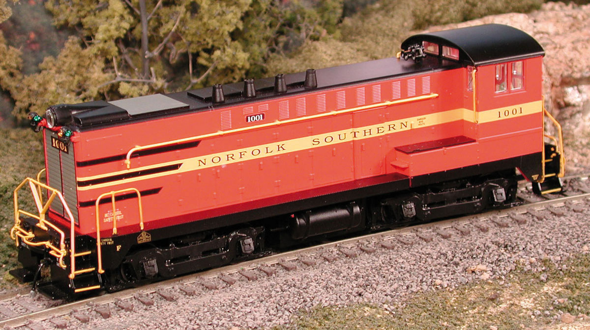
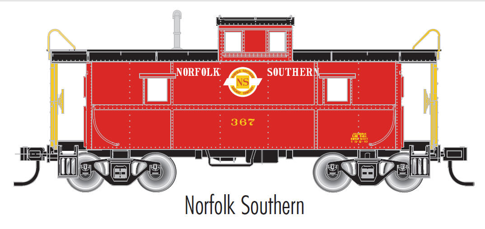
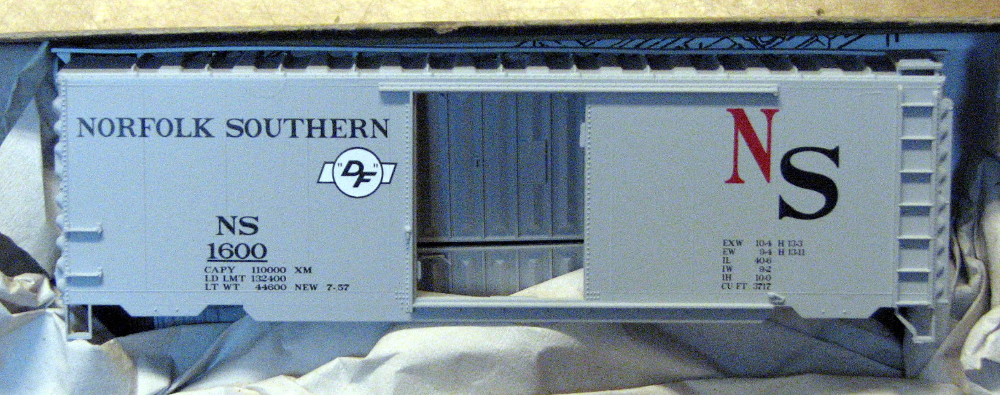
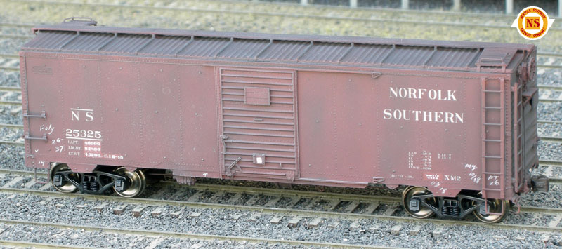
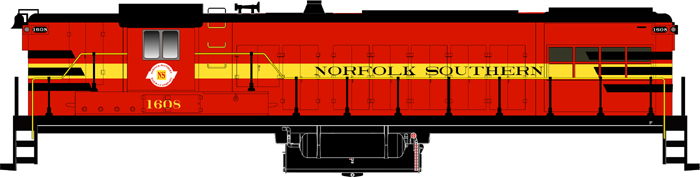
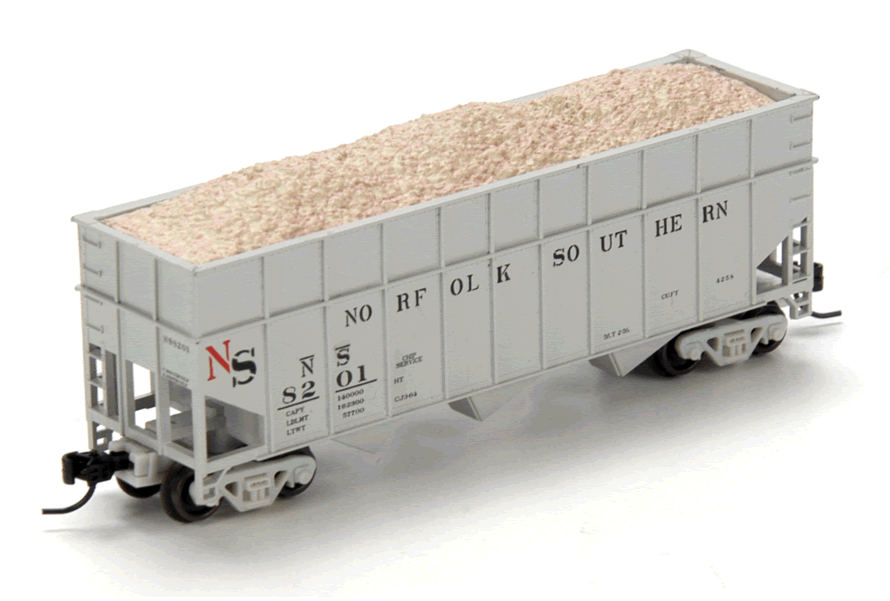

|
Welcome!
The original Norfolk & Southern Railway that ran from Norfolk,
VA to Charlotte, NC with various branches (Aberdeen, Asheboro, Beaufort,
Belhaven, Carthage, Columbia, Durham, Ellerbe, Fayetteville, Goldsboro
(A&EC), Jackson Springs, Lee Creek, Oriental, Snow Hill (A&EC),
Suffolk and Virginia Beach, VA). It was merged into the Southern Railway
system on Jan. 1st, 1974.
For those of you looking for information about the now present Norfolk
Southern Corporation, they can be found here: http://www.nscorp.com/
Note to people searching for Employee Records/Retirement Records/Family
Genealogy:
NSHS does not have any Norfolk Southern Railway employee records. It is
recommended that you contact the U.S. Railroad Retirement Board, which
you can contact at 844 North Rush, Chicago, IL 60611 (312) 751-4500, or
on the web at The U.S. Railroad Retirement Board: http://www.rrb.gov/
Norfolk & Southern Historical Society News
Next N & S Historical Society Annual Meeting will be held in Suffolk,
VA for 2017 on April 22nd.
April 19, 2016
Added links to Archive.org from member John Dulaney of scans from NS Timetables
and other paper on History page.
Meeting Agenda for Friday, April 15, 2016
https://www.facebook.com/events/1395821170725446/
7:00 a.m. — Chase NS train E25 from Fuquay-Varina to Fayetteville.
On return trip, visit NS caboose & #1801 FM locomotive. Visit Duncan
Junction (Duncan depot, now gas station).
6:00 p.m. — Dinner at Cooley's Restaurant http://cooleysrestaurant.net/
Afterwards, slide show at Fuquay-Varina
Women's Club at 602 N. Ennis Street (just a few blocks south of Cooley's)***note
change of venue*.
Meeting Agenda for Saturday, April 16, 2016
9:00 a.m. — 10:00 a.m. - Gather at the Fuquay-Varina Centennial Museum
131 S. Fuquay Ave, Fuquay-Varina, NC http://www.fuquay-varina-museums.org/
There are a number of NS and D&S artifacts on display here along with
other memorabilia of Fuquay Springs and Varina.
10:00 a.m. — 12:00 p.m. - Annual Business Meeting at the Aviator
Tap House 600 East Broad Street, Fuquay-Varina, NC
http://www.aviatorbrew.com/tap-room
We will conduct our NS Society business in the old Varina train depot.
12:00 p.m. — 1:00 p.m. Lunch - We will be dining at Aviator Tap House.
1:30 a.m. — Group Photograph Hopefully we'll be able to visit
the NS 375 Caboose and have a group photo.
3:00 p.m. — New Hope Valley Railway Train Ride. http://www.triangletrain.com/
Bonsal, NC
This event will be open to the public and will be a fund-raiser for NS
caboose at Fuquay. Tickets: Adults $10, Seniors (60+) $9, Children (2-12
yrs) $7, Children under 2 years free. Rain or Shine: open cars. Excursion:
one hour. Arrive 30 minutes early. Limited for handicapped.
Hotels:
Quality Inn — Fuquay-Varina $68
Comfort Inn — Fuquay-Varina $93
Hampton Inn — Holly Springs $129
March 22, 2016
Added Meeting Agenda for NSHS Annual Meeting above.
June 7, 2015
Next N&S Historical Society Annual Meeting will be held in Fuquay-Varina
on April 16th, 2016.
March 4, 2015
N & S Historical Society 2015 Annual Meeting in Washington, NC on
April 25th. See the lastest newsletter for more details, mailing out now.
Saturday
8:00 a.m. - Gather at the Civic Center in Washington, NC, 110 N. Gladden
Street.
9:00 a.m. - 10:30 a.m. Annual Business Meeting at the Civic Center
10:30 a.m. - 11:30 a.m. Exhibit of Bill Sellers photos in the Meeting
Room
11:30 a.m. - Group Photograph
12:00 p.m. - 1:00 p.m. Lunch a the Grubb Brothers Eatery Restaurant, 156
E. Main Street. Their web site is: www.grubbrotherseatery.com.
1:00 p.m. - 2:00 p.m. Exhibit of Carolina Coastal Railway Equipment in
the vicinity of Havens Gardens.
3:00 p.m. Follow the route of the abandoned original NS right-of-way between
Pantego and Roper.
January 26, 2015
Added NS 375 Caboose page here for the Fuquay-Varina
Museum's efforts to save and preserve this caboose. Facebook Page here:
https://www.facebook.com/NS375
January 15, 2015
Added several new models and updaed the Models
page for new Atlas, Bowser and East Coast Railroads releases.
October 9, 2014
Modified (above) change of date for NSHS Annual Meeting from April 18th
to the 25th, 2015.
September 9, 2014
Added Ken Lehman's article in Model Railroad Planning 2011 issue on Farmville,
NC to NSArticles webpage.
June 28, 2014
Updated History page (removed dead links) and
added new No. 94 Timetable from 1940
(courtesy of Mike from East Coast
Railroads).
June 25, 2014
New models released from East Coast Railroads posted to Models
page.
HO Scale - Rolling Stock
East Coast Railroads:
2-Bay 55 Ton Fishbelly (gray) Hopper Car kit with the correct stencil
lettering like the original hopper cars. HM, BLT 6-41, C 4-67. Sand Loads
(BH-006S) also available.
Set-1 #8500, 8501, 8518. (photo link) http://eastcoastrailroads.com/models/Set-1.jpg
Set-2 #8526, 8531, 8534. (photo link) http://eastcoastrailroads.com/models/Set-2.jpg
40' Double Door Box Car kit, White lettering with the correct stencil
lettering like the original box cars.
#26000 XM4, BLT 4-41, C.J. 11-48 (photo link) http://eastcoastrailroads.com/models/NS-26000(2).jpg
#26023 XM4, BLT 4-37, C.J. 6-56 (photo link) http://eastcoastrailroads.com/models/NS-26023(2).jpg
May 27, 2014
Removed some dead links from Local Links page.
April 28, 2014
N & S Historical Society 2014 Annual Meeting was held in Fayetteville,
NC for 2014 on April 25th - 27th.
Activities included railfanning around Fayetteville and visiting local
shortlines.
Friday
8:00am - Amtrak
depot on Hay Street, railfan CSX local yard job to Vander and NS local
P25, possibly Aberdeen & Rockfish.
1:04pm - Amtrak #90, the Palmetto
2:00pm - Cape Fear Rail Car
Service tour - 2504 Greensboro St,
Fayetteville, NC
3:44pm - Amtrak #89, the Palmetto
5:00pm - Meet at Fairfield Inn @ 562 Cross Creek Mall and eat dinner
7pm - Cape Fear Model Railroader's
Layout Open House - 116 Green St,
Fayetteville, NC
Saturday
8:00am - Fayetteville
Area Transportation & Local History Museum - 325
Franklin Street, Fayetteville, NC
9:00am - Annual Business Meeting
12noon - Lunch at Subway at Amtrak
Depot
1:04pm - Amtrak #90, the Palmetto
2:00pm - Cape Fear Rail Car
Service tour - 2504 Greensboro St,
Fayetteville, NC
3:44pm - Amtrak #89, the Palmetto
Sunday - The Red Springs & Northern motor car ride departed
from Red Springs, NC at 10am on Sunday the 27th.
http://redspringsandnorthern.com/
April 8, 2014
Added new Atlas 50" Precision Design Box Cars to the Models
page.
Item #1354-3 - 50" Precision Design Box Car, Norfolk Southern - Road
#2101
Item #1354-4 - 50" Precision Design Box Car, Norfolk Southern - Road
#2137

November 13, 2013
Added Freight Cars link to the History page.
October 29, 2013
Added photos of NS 383 and NS 388 in Kings Mountain, NC to the Equipment
page.
October 21, 2013
The N & S Historical Society Annual Meeting has been moved from April
19th to April 26th due to Easter.
October 8, 2013
Modeling a NS GE 70-tonner article
posted to Model Railroad
Hobbyist magazine's October 2013 issue.
September 20, 2013
Added a book called Trains Rolling by H.A. McBride (1953) MacMillan, to
the NSArticles webpage.
August 14, 2013
New O-scale and HO-scale decals available for NS cabooses from East Coast
Railroads on Decals page.
July 30, 2013
NS wooden caboose 332 has found! Now located in private ownership in Decatur,
TN. Relocated from Landrum, SC in 2011. Information posted to Equipment
page.
July 29, 2013
Former NS cabooses 365 & 367 have been found up in Indiana! Information
posted to Equipment page.
July 27, 2013
Learned that the contact@norfolksouthernhs.org was not working anymore
and we deeply apologize for the inconvience.
Please use railroad@nc.rr.com for e-mail for now and we'll route this
to the right person.
June 19, 2013
Added Great Decals NS to Decals page
for NS boxcar 2300 with white N&S scroll logo.
June 4, 2013
NS 611 Camp Car
Added NS 611 Camp car photo to Equipment
page. Currently being stored at Shearon Harris.
June 3, 2013
New Bowser DS-4-4-1000 Switcher Locomotives

Ready to Run and Detailed. Features: air hoses, windshield wipers, grab
irons, coupler lift bars, operating headlight, window glass, can motor,
flywheels, nickel silver wheels with RP25 flanges and knuckle couplers.
Available with sound and DCC or just DC. DCC ready with 8 pin plug.
Sound Locos are equipped with Digital Sound Decoders
Due Fall 2013
NS Original
23773 Road #1001 $169.95
23774 Road #1002 $169.95
23775 Road #1001 w/snd $279.95
23776 Road #1002 w/snd $279.95
Go to Bowser's webpage here. http://www.bowser-trains.com/
New book called Locomotive Quarterly featuring NS Berkshire steam locomotives
was added to NSArticles webpage.
Added NS 50' boxcar to Equipment page. Former
Norfolk Southern boxcar now used as a MOW storage shed on the GFRR Albany,
GA 6/2/2013.
March 4, 2013
N & S Historical Society Annual Meeting in Walstonburg/Wilson area
April 20th, 2013
Schedule for Saturday April 20, 2013
9:00 a.m. Annual Meeting
The annual meeting will be at the former NS depot in Walstonburg, NC.
Walstonburg is about 15 miles east of Wilson. It is slightly south of
highway 264. Turn off of highway 264 onto highway 91 and go south for
a short distance until you get to the railroad track. The meeting place
(former depot) is at the crossing.
10:00 a.m. Slide Show by Mike Seawell and Felix Freeman
This will cover operations and equipment of the original NS and present
day operation and equipment of short lines on the former NS.
Noon Lunch
Lunch will be a B-B-Q meal provided by the local American Legion at a
nominal cost to attendees. This will coincide with a "Proud to be
an American" celebration on the same day in Walstonburg.
1:00 p.m. Driving Tour of Local Area
We will head east from Walstonburg and work our way to Wendell. We are
most fortunate to have members Mike Seawell and Tom King to guide us on
our tour. On this tour we will visit locations on the former NS. This
will include buildings that are at their original locations and buildings
that have been moved. Mike and Tom will enlighten us as to what used to
be at sites that are now gone. Mike and Tom have spent a considerable
amount of time in the area and have extensive knowledge of what went on
at the time of NS operation . Places that we will visit include Wilson
, Simms, Bailey, Middlesex, Zebulon, and Wendell.
July 2, 2012
Heritage Locomotives at NC Transportation Museum July 3rd and 4th.
Just a quick note to let everyone know that the Norfolk & Southern
Historical Society will have a table set up in the round house at the
NS Heritage Locomotive event at the North Carolina Transportation Museum
July 3 & July 4. If you are attending the event drop by our table
to say hello and enjoy a little Norfolk Southern conversation.
June 24, 2012
Next N&S Historical Society Annual Meeting will be held in Wilson,
NC for 2013 on April 20th.
We will release more details as they become more refined.
April 26, 2012
Norfolk Southern releases heritage NS locomotive
We are proud to see the new Norfolk Southern Corporation's unit 8114
released out of the paint shop. Click on the link to make the jump.
"Norfolk Southern Railway Company 8114, Norfolk Southern's ninth
heritage locomotive, rests under a colorful sunrise outside the paint
shop at DeButts Yard in Chattanooga. Casey Thomason photo, copyright Norfolk
Southern Corporation. For more information, visit www.nscorp.com"
http://www.railpictures.net/viewphoto.php?id=396143
March 1, 2012
Norfolk Southern celebrates colorful heritage with historic paint schemes
We are greatly thankful for Norfolk Southern Corporation's decision to
paint one of their new units in an original Norfolk Southern red Baldwin
paint scheme. We are thankful for our member's contribution and help towards
this project.
"Norfolk Southern Railway (SR, EMD) (not to be confused with today's
Norfolk Southern) was a line serving southeast Virginia and northeast
North Carolina, chartered in 1883 and acquired by Southern Railway in
1974."
Here is an artist's rendering of the unit. Click on it for a larger version.

For more information, please read the news release:
http://www.nscorp.com/nscportal/nscorp/Media/News%20Releases/2012/ns_heritage.html
February 10, 2012
N & S Historical Society Annual Meeting in Fort Story, VA April 21st,
2012
Schedule April 21st, 2012:
9:00 A.M. Gather at Cape Henry Lighthouse Visitor Center on Fort Story
Note: There is an $8 Entrance Fee.
9:00 A.M. - Noon
1. Annual business meeting at St. Theressa Church
2. Slide show by Dale Dicont at St. Theressa Church
3. Walking tour of Old Cape Henry Lighthouse, St. Teressa Church and the
N & S Depot.
12:30 P.M. — 2:00 P.M.
1. Lunch on NRHS Tidewater Chapter Car at Little Creek Yard (Ferry Rd.)
Note: This will be a box chicken lunch from Bojangle's — cost
$7.00.
2. Program by members of the Tidewater Chapter NRHS re: N & S and
operations at Little Creek Yard.
2:30 P.M. — 3:30 P.M.
1. Meet at Newtown Road Station. Ride the The Tide to the end of the line
and return.
4:30 P.M.
1. Meet at the Railroad Museum of Virginia in Portsmouth for a tour conducted
by members of the NRHS Tidewater Chapter.
On the evening of April 20th, we will meet at 6:00 P.M. at Charlie's
Seafood Restaurant, for anyone interested. This is located at 3139 Shore
Drive West (Hwy 60) between Lynhaven Bridge and Great Neck Rd. in Virginia
Beach.
June 16, 2011
NS 100-ton Hoppers still running on the rails
Added additional information for Existing Equipment
page:
Covered hoppers (Most of these were from a group of 150 cars numbered
5300-5449, built in 1973. The last of new cars to be bought by the independent
NS.
Bought for phosphate service on the Lee Creek Branch.
From ORERs, it shows that the Southern eventually renumbered them into
a 90850-90999 pool (supported by NS 5405->SOU 90920->PLCX 16688).
The 1975 ORER lists 105 still lettered for NS, then the numbers dwindle
in 1977 - 80, 1979 - 46, 1980 - 26, 1981 - 18, 1983 - 16.
This last numbering scheme would support PLCX range 16621-16765. By the
1989 ORER, it showed PLCX having 145 of these and SOU - zero.
April 27, 2011
Atlas Trainman NS Cupola Caboose

The first all-steel cabooses built for the Chesapeake & Ohio Railroad
were produced in 1937 by the Magor Car Corporation in Clifton, N.J. Magor,
along with St. Louis Car Company and ACF, ultimately built a total of
350 cabooses for the C&O using a similar design. The last were produced
in 1949. Through subsequent rebuilding and modernization, many remained
in service through the end of regular caboose usage in the 1980s. Cabooses
of a similar design were also built for Pere Marquette, Missouri Pacific
and Chicago & Eastern Illinois.
Features:
· True scale dimensions with accurate details
· Weighted, detailed underframes
· Equipped with AccuMate® Knuckle Couplers
· Trucks equipped with free-rolling metal wheels
· Clear window inserts & separately applied side railings
AccuMate® couplers are made under license from AccuRail, Inc.
Norfolk Southern Railway #367 and #371
Product Numbers 11358 and 11359
Guaranteed Pre-orders through 02/25/2011. Estimated arrival 3rd Qtr 2011.
MSRP: TBD.
For more information, see the Winter 2011 Catalog online here: http://download.atlasrr.com/Winter11Catalog/3-16a.pdf
April 12, 2011
Model Railroader Club Offerings NS 40-foot Boxcar.

The May 2011 issue of Model Railroader magazine on page 13 has an ad about
our 40-foot NS Boxcars custom made by Bowser.
For more information, please go here: http://norfolksouthernhs.org/NSclubcar.html
They are also listed in our NS Modeling page.
January 26, 2011
Walthers decals scanned and posted to the Modeling
page.
New Speedwitch kit

K120.1 - Norfolk Southern 1932 ARA Box Car with Viking roof
These kits include one-piece cast resin bodies, etched metal trust plates,
resin, styrene, and metal details and accurate decals, including
the white, red, and yellow emblem shown in the top corner of the photo
of the finished model. Trucks and couplers not included.
Accurate trucks are available from Tahoe Model Works (shown on model above.),
$40.
http://www.speedwitch.com/Models/k120_1.htm
Added new Speedwitch NS 25325 to the Modeling
page.
August 2010
Craig Zeni model of the Wright Trak kit:

Wright Trak announces NS Gondola resin kit
Now available
NORFOLK SOUTHERN
(old original Lowside Gons)
With Custom Decals from Rail Graphics.
Order Now!
$39.95 + shipping
Click
Here for Instruction Sheets
For more information, please visit: http://www.wrighttrak.com/
Added new WrightTRAK Gondola NS 7738 to the Modeling
page
July 27, 2010

New Bowser AS-616 Locomotives (Announced at NMRA 2010 Convention)
Ready To Run and Fully Detailed. New die cast frame with a new fuel
tank, fuel fills, and site glass. Brass MU Hoses, brass air hoses, brass
windshield wipers, steel grab irons, steel coupler lift bars, operating
headlight, window glass, can motor, brass flywheels, nickel silver wheels
with RP25 flanges, metal knuckle couplers, warm white LED headlight. New
handrails (installed). Body is easily removed if necessary. NMRA 8-pin
plug for DCC (Decoder-ready)
The sound locos will be equipped with SoundTraxx Tsunami Digital Sound
Decoders
DC $169.95 / DCC with Sound $279.95
Due Early 2011 Prefered Order Date 9-15-10
For more information: http://www.bowser-trains.com/New_Products/New
2007-18-10 AS-616/New 07-18-10 AS 616.htm
June 30, 2010
New Atlas 1932 ARA Box Car (released June 2010)
Added new Atlas 1932 ARA Box Car to the Modeling
page. Three numbers available in both HO and N scale (25229, 25246, 25499).

April 16, 2010
Updated NSHS Annual Meeting Agenda and new Existing Equipment
Added DME
16652 covered hopper to the surviving equipment
page.
Removed "Save the NS 701" page since it was scrapped in Laurinburg.
N & S Historical Society Annual Meeting in New Bern, NC April 17th,
2010 (updated April 16th, 2010)
Schedule April 17th, 2010:
9 AM - Frit Car Inc. Tour, Behind Handy Mart, 2020 US Highway 17, New
Bern, N.C. http://www.fritcar.com/
12 Noon - Lunch @ Chelsea, 335 Middle Street, New Bern (downtown) http://thechelsea.com/
1:30 PM - Viewing of former New Bern Union Station mural, New Bern Academy
Building (Academy Museum), New and Hancock Streets (500 Hancock St).
http://www.tryonpalace.org/newbernacademy.html
2 PM - Annual Meeting @ Olde Pinnix Drug Store, 628 Hancock Street
3:00 PM - Restore Union Station, Presentation by New Bern Preservation
Foundation
3:30 PM - View New Bern Union Station (outside only)
4:00 PM - 100th Birthday - Union Station Reception, Hosted by New Bern
Preservation Foundation, New Bern Historical Society and the Preservation
Legal Action Trust at the Olde Pinnix Drug Store
4:30 PM - Carolina Coastal Railroaders Club Layout Tour, 2001 South Glenburnie
Road, New Bern, NC
http://carolinacoastalrailroaders.org/
January 28, 2010
New Athearn Wood Chip Hopper (released late 2009, more in 2010)
Added new Athearn Wood Chip Hopper to the Modeling
page. Several numbers and 4-packs are available with new 4-pack sets being
made for 2010.

January 27, 2010
S. David Carriker's book
Added S. David Carriker's book "Railroading in the Carolina Sandhills:
Volume 1 & 2" to the NSarticles
page.
January 7, 2010
N S Historical Society Annual Meeting
We will be meeting in New Bern, NC on Saturday, April 17th, 2010.
The agenda will be announced in the next month.
Tuesday, Sept. 15, 2009
NS 384 added to surviving equipment page
Thought you may be interested in hearing about this former NS caboose,
No. 384. See the attached photos. The caboose is located on private property,
but I was allowed to take some photos back in 2006. As you can see from
the photos, it has been made into a cabin with a stick-built addition
extending off the left side between the bay and the A-end, and a deck
along the rest of that side all the way to the B-end platform. From the
placement of the addition, a hole had to be cut in the side of the car
near the A-end on the left side. How big the hole is I had no way of determining.
The B-end leaf-spring truck had NOR-SOU. RR. cast on the side-frame. I
did not check the A-end truck.
The car is south of Cordele out of view on the east side of US41 just
north of the GA300 interchange. You may be able to spot it on Google Earth.
Stephen Syfrett
Albany, GA
Sunday, April 26, 2009
N S Historical Society Annual Meeting
We will be meeting at the NC Railway Museum in New Hope (Bonsal, NC)
on Saturday May 2, 2009. The agenda will be as follows.
9:30 to 11:30 AM The railway museum will be open for walking around the
various displays and the company store should also be open to accept any
funds you want to spend.
11:30 to 12:15 PM Lunch
12:15 to 1:30 PM The Business meeting will be on one of the train cars.
2:00 to 3:30 PM Train ride. The Museum may be able to do a run by.
Since there are no restaurants close by, we have made arrangements with
Old Time Barbecue to cater a lunch. The menu will be Eastern Carolina
Pork Barbecue along with hush puppies, potatoes and green beans. Drinks
will include Sweet Tea and Lemonade. If you would rather have something
else to eat or drink, you will need to bring it with you. A $9.00 donation
per person is suggested. The Society will have to pay for any difference
in the total bill. At present we have given a number of 60 people to Old
Time. Make sure that you send back the enclosed flyer with the total number
of people that you intend to bring to lunch. Money will be collected on
May 2nd.
The Society has also had to commit to a cost of $375.00 to the NC Railway
Museum for the Train ride. The cost of an adult is $9.00 and children
12 years and younger is $6.00. The total seats on the Train are 239 seats.
To pre reserve seats please send in your money along with the enclosed
form. You will be able to pick up your tickets after 9:30 AM on the 2nd.
You can also invite your non member friends to ride the train, as long
as someone pays for the ticket. The Train ride will be a first come first
serve basis. If we go past 239 then we will have a standby list.
If you have any questions you can contact me (John Janosko) at 919 656
6897. Hope everyone can come and I for one intend on having a great time.
Posted by Norfolk Southern Historical Society Web Admin at 7:40 PM
Thursday, March 26, 2009
Save the NS 701!!!
http://norfolksouthernhs.org/ns701.htm
Save a piece of North Carolina history! As railroaders in this state,
we all know another Norfolk Southern existed long ago, and now is almost
completely gobbled up in the flurry of mergers and abandonments of the
last thirty years. Still, an original piece of the old NS remains in locomotive
NS 701, currently in storage, but now threatened with the scrapper's
torch! We at the NS Historical Society and the North Carolina Railway
Museum feel a tangible piece of history like this should be preserved,
and believe you feel the same way. We have therefore established the NS
701 Preservation and Restoration Fund. If you are interested in seeing
a real part of our railroad heritage preserved for the enjoyment and education
of your future generations, please send a donation of any size to:
NS 701 Preservation and Restoration Fund
c/o North Carolina Railway Museum, Inc.
Post Office Box 40
New Hill, NC 27562
All donations are tax deductible. Please help us in this worthwhile cause,
and keep our common history alive.
These 70-tonners once ran the rails at Bonsal, NC during construction
of the relocation of the NS rail line during the building of Jordan Lake,
so it would be fitting that we bring one of them back to the New Hope
Valley Railway! They were the first NS purchase of locomotive power other
than Baldwin since 0-6-0 number 14 back in 1900. Delivered to the NS from
GE in June 1948, they were the only 70-tonners used to pull the mail and
express trains (#1 & #2) between Raleigh and Norfolk, VA. The last
run of the mail train was December 12th, 1951 and after that, these engines
were used in local and branch line service and as switchers at the smaller
yards. After #702 was sold in 1964, the other two (701 & 703) spent
most of their time around New Bern and on the Bayboro Branch. After the
1974 merger with Southern Railway, they were repainted again into the
Southern black colors and remained on the SR roster until 1978. The Norfolk
& Southern was the only Class 1 railroad to have its' Headquarters
located in Raleigh, NC.
Posted by Norfolk Southern Historical Society Web Admin at 7:39 PM
Friday, March 13, 2009
New NSHS website!
This marks the new update website (actually third revision) for the Norfolk
Southern Historical Society. Hopefully this will make it a bit easier
to keep up with any new changes to the website.
-Rob
Posted by Norfolk Southern Historical Society Web Admin at 1:08 PM
IRS 501(a) Page1 IRS
501(a) Page2 IRS 501(a) Page3
IRS 501(a) Page4
|
{kind=link}
{kind=link}
{kind=link}
{kind=link}
.jpg){kind=link}
.jpg){kind=link}
{kind=link}
{kind=link}
{kind=link}
{kind=link}
{kind=link}
{kind=link}